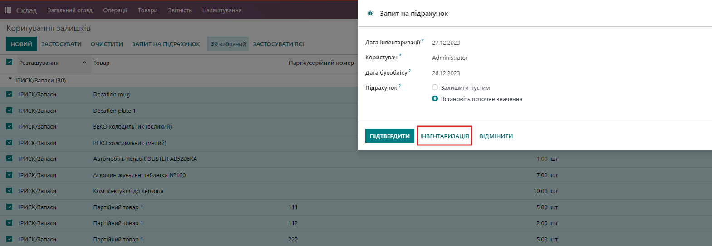
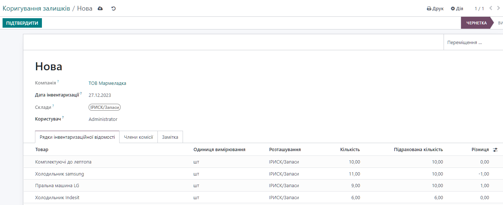
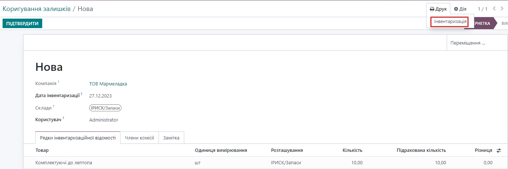

Stock Inventory for Ukraine
The module adds the ability to record the results of the stock inventory as of the date and generate a printed form of the inventory statement.
In order to generate an inventory statement:
- go to the Inventory/ Operations/Inventory adjustments
- make the necessary selection of stocks in the List view, and click the Request count button
Important! Self-ERP guarantees quality of developed modules but cannot guarantee compatibility with all the third-party modules that can be installed on your database.
Please review Sales Conditions and Odoo Apps FAQ to ensure that you understand all the responsibilities of the customer and module supplier before installing the module.
If you encounter any bugs or problems with Self-ERP modules, please contact our support team at support@self-erp.com.

In the window that appears, the user must click the "Inventory" button - after that, the generated document "Inventory Statement" will open on the screen.
In the document, the user needs to put the actual stock quantity in the "Calculated quantity" column. When finished, confirm the document by clicking on the "Confirm" button

After that, the quantity of goods in the stock will be adjusted and the inventory results will be reflected in the accounting.
To generate a printed form of the inventory statement in the "Print" menu, the user must select the "Stock Inventory" option
